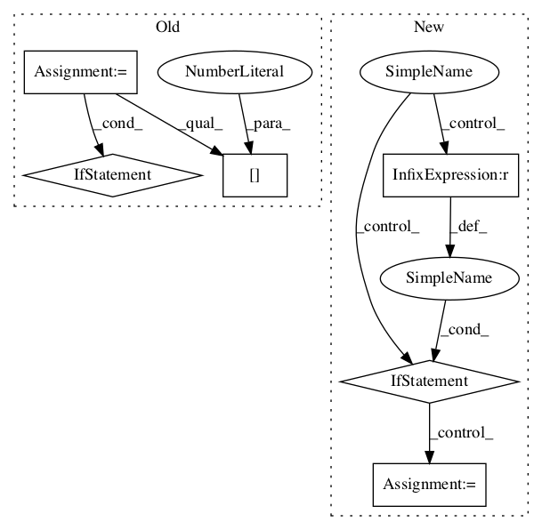

a1c56edd98898ed25db9c6ed1e05b50a0a85e097,rl_coach/memories/non_episodic/differentiable_neural_dictionary.py,,load_dnd,#Any#,271
Before Change
def load_dnd(model_dir):
max_id = 0
for f in [s for s in os.listdir(model_dir) if s.endswith(".dnd")]:
if int(f.split(".")[0]) > max_id:
max_id = int(f.split(".")[0])
model_path = str(max_id) + ".dnd"
with open(os.path.join(model_dir, model_path), "rb") as f:
DND = pickle.load(f)
After Change
if os.path.isdir(path) or fname.split(".")[-1] != "srs":
continue
checkpoint_id = int(fname.split("_")[0])
if checkpoint_id > latest_checkpoint_id:
latest_checkpoint = fname
latest_checkpoint_id = checkpoint_id
with open(os.path.join(model_dir, str(latest_checkpoint)), "rb") as f:
DND = pickle.load(f)
for a in range(DND.num_actions):In pattern: SUPERPATTERN
Frequency: 3
Non-data size: 6
Instances Project Name: NervanaSystems/coach
Commit Name: a1c56edd98898ed25db9c6ed1e05b50a0a85e097
Time:
Author: null
File Name: rl_coach/memories/non_episodic/differentiable_neural_dictionary.py
Class Name:
Method Name: load_dnd
Project Name: asyml/texar
Commit Name: da37438735fd4b845bb0874562bd071865c480bb
Time:
Author: null
File Name: texar/modules/encoders/rnn_encoders.py
Class Name: RNNEncoderBase
Method Name: __init__
Project Name: NifTK/NiftyNet
Commit Name: 4421754f9886233e90563eb8088348bb36024095
Time:
Author: null
File Name: niftynet/layer/loss_segmentation.py
Class Name: LossFunction
Method Name: layer_op